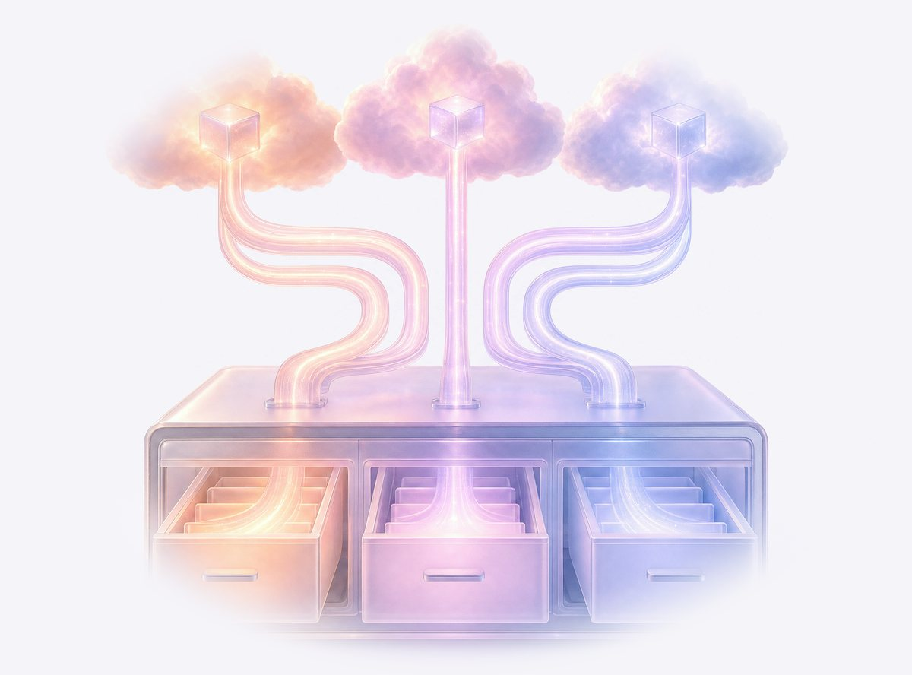

Your agent stays. The sandbox is up to you.
Keep the coding agent you use, with your skills, instructions and hooks. Each subagent gets its own sandbox, a copy of your repo and its own branch, on whichever provider you pick.
CLOUDY_CLOUD_PROVIDER=instaboxSubagents run on Instabox machines in the cloud.
- 01TryStart on any provider: the cloud, your own server, or microVMs on your laptop.
- 02SwitchChange one setting. Your agent, repo and workflow stay the same.
- 03Fail over comingList several providers. When one is full or down, new subagents start on the next.
Run it from your laptop. Run it at any scale.
Subagents on your laptop share its CPU, memory and battery with you. Their builds and tests slow your session down. With Cloudy Cloud you still start and steer everything from your laptop, but the work runs on machines in the cloud.
Subagents on your laptop
Every subagent runs on your laptop.
Subagents with Cloudy Cloud
Every subagent gets its own computer.
When your session starts a subagent, Cloudy Cloud gives it a fresh cloud machine. The subagent runs a full coding agent there (Claude Code by default), on a copy of your repo. Your laptop only runs your own session.
- Sees your tracked files, including uncommitted edits
- Runs in the cloud, not on your laptop

Work comes back as a branch.
Each subagent commits and pushes to its own branch on your GitHub repo, named cloudy-cloud/<id>. Open a pull request from it, or pull it down with one git fetch.
- One branch per subagent
- Your local folder stays as you left it
Keep the conversation going.
A subagent stays open after it answers. Send it another message and it carries on with the same context. It stops on its own after 60 idle minutes, or when your session ends.
- Same context for every follow-up
- Idle machines stop by themselves
One subagent, or fifty.
Start as many subagents as the task needs. Cloudy Cloud queues them and starts machines as fast as your cloud plan allows. Your plan's machine limit caps how many run at once.
Install once, then use subagents as usual.
- 1
Run the installer
Run
npx -y cloudycloud setupin a terminal. It checks your tools and installs thecloudy-cloudcommand and the Cloudy Cloud skills. - 2
Add your keys
Setup asks which agents you run (Claude Code, Codex, opencode, pi or free-pi), then asks for your cloud and GitHub keys and for the credentials those agents need, and tells you where to get each. A Claude token is asked for only if you use Claude Code. The setup skill is for Claude Code. Setup does not set up the ChatGPT login file for Codex workers. Or run
npx skills add dennisonbertram/cloudycloudand ask Claude to "set up Cloudy Cloud". - 3
Start a session
Run
cloudy-cloudinstead ofclaude, orcloudy-cloud codex,opencode,piorfree-pifor another agent. Thengit fetch origin cloudy-cloud/<id>to pull a subagent's work. Plainclaudeis unchanged.
$ npx cloudycloud setup █▀▀ █ █▀█ █ █ █▀▄ █▄█ █▀▀ █ █▀█ █ █ █▀▄ █▄▄ █▄▄ █▄█ █▄█ █▄▀ █ █▄▄ █▄▄ █▄█ █▄█ █▄▀ Checks your tools, links the command and saves your keys. ●━━○━━○━━○ Tools 1 of 4 ✔ git, node, npm and curl are installed ✔ Dependencies installed ✔ cloudy-cloud already runs from this folder ✔ Fleet skill available in every project ●━━●━━○━━○ Instabox key 2 of 4 ? Instabox API key Create one at https://dashboard.instabox.sh/dashboard/api-keys › Paste it (nothing shows as you paste):
$ cloudy-cloud ❯ Use three cloud subagents in parallel. Each one adds a one-line comment to the top of README.md saying hello from agent N, commits, and pushes its branch. Then summarise the branch names. Called cloud 3 times ⏺ All three agents finished and pushed their branches. I fetched each branch and checked it: each one changes only README.md. ┌───────┬───────────────────────┬─────────┐ │ Agent │ Branch │ Commit │ ├───────┼───────────────────────┼─────────┤ │ 1 │ cloudy-cloud/569dac7c │ e4b7bf3 │ │ 2 │ cloudy-cloud/9b7701a9 │ b6968f1 │ │ 3 │ cloudy-cloud/5415161c │ 2007b13 │ └───────┴───────────────────────┴─────────┘ All three agents ran on Haiku 4.5, and together they cost about $0.18. ✻ Cooked for 15s
$ git fetch origin $ git branch -r --list "origin/cloudy-cloud/*" origin/cloudy-cloud/569dac7c Add hello from agent 1 comment to README origin/cloudy-cloud/9b7701a9 Add hello from agent 2 comment to README origin/cloudy-cloud/5415161c Add hello from agent 3 comment to README $ git merge origin/cloudy-cloud/569dac7c
Your agent for your session. Your choice of agent and model for workers.
Your session can be Claude Code, Codex, opencode, pi or free-pi. Workers can run Claude Code, pi, oh-my-pi, Codex or opencode, on Claude or on GLM, DeepSeek, Particle, OpenRouter or OpenAI models with your own key. Send bulk, well-specified work to a cheaper open model and keep a stronger one for the hard parts. Codex and opencode workers have not yet been run on a real cloud machine.
Other ways to run agents in the cloud.
Cloud sandboxes give you machines. Hosted agents give you their own agent in their own app. Cloudy Cloud plugs sandboxes from the provider you choose into the coding agent session you already use: Claude Code, Codex, opencode, pi or free-pi.
| Product | Starts from your local coding agent session | One machine per subagent | Results land as | Models for workers | Hosted app, no setup |
|---|---|---|---|---|---|
| Cloudy Cloud | Yes | Yes | A git branch per subagent | Claude Code, pi, oh-my-pi, Codex or opencode, on Claude, GLM, DeepSeek, Particle, OpenRouter or OpenAI models | No, you run it yourself |
| Claude Code on the web | No, a separate cloud session | No, subagents share the session's machine | A branch and pull request | Claude only | Yes |
| Cloud sandboxes: Instabox, boat, Maritime, E2B, Daytona | No, you wire it up yourself | You build it | Files on the machine | Whatever you install | Machines and an API, not an agent |
| Hosted coding agents: Codex cloud, Cursor, Copilot, Devin | No, their own agent and app | One machine per task | A branch or pull request | The vendor's choice | Yes |
| Capy | No, Capy's own app and agent (web, desktop, Slack, Linear, GitHub) | Usually. A subagent that writes code gets its own machine; others can share the parent's machine | A pull request, with Autofix for CI and review comments | Many: ChatGPT, Copilot or SuperGrok subscriptions, gateways such as OpenRouter, API keys | Yes |
Based on each product's public docs, November 2026. Products change; check their docs for the latest.
Questions, answered simply.
What is a subagent?
When your coding agent (Claude Code, Codex, opencode, pi or free-pi) hands a piece of work to a helper agent, that helper is a subagent. Cloudy Cloud runs each helper on its own cloud machine instead of on your laptop.
What do I need?
An account with a sandbox provider (Instabox is the default; your own server over SSH and microsandbox on this computer also work), a GitHub repo you can push to, Node.js 20 or later, and a credential for each agent your workers use: a Claude subscription or API key for Claude Code workers (the default), or the provider key for a profile.
What can a subagent see?
Files tracked by git in your repo, including uncommitted edits. It can't see untracked files or your personal agent settings (for example your Claude settings). It has MCP servers only if you copy them with cloudy-cloud mcp add.
What happens to the machines?
A subagent stops after 60 idle minutes or when your session ends. Its machine is deleted after 6 hours by default, 24 at most. Only work pushed to GitHub is kept.
Is it safe?
Your GitHub token never reaches the cloud machine. Subagents run with permission checks off, so protect your main branch. The setup guide shows how.
Does it change plain claude?
No. Only sessions you start with cloudy-cloud use the cloud.
Is there a hosted version?
Not yet. A hosted version is coming. Today Cloudy Cloud is open source (MIT) and you bring your own keys: your cloud account, your Claude credentials and your GitHub token.
Send your subagents up.
$ npx -y cloudycloud setup
Read the docs